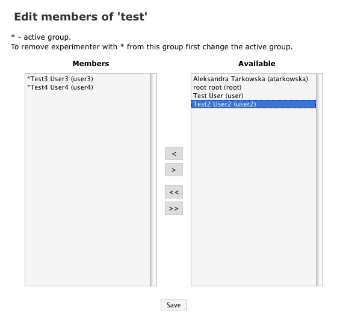

OMERO.webadmin User Guide
| Table of Contents | Up: 4. How to do ...? | Previous: 4.13. How to edit a group? | Next: 4.15. How to manage enumerations? | Down: 5. Troubleshooting |
4.14. How to manage users within a group?
From the
Groups
page (see Section 4.10), to manage users wihtin the
selected group, click on the
Edit users in group
button  in the
Actions
column.
in the
Actions
column.
You can now add or remove users from a group e.g. system.
- To add users: Select the users displayed in the left-hand pane
and click on

- To delete users: Select the users displayed in the right-hand
pane and click on

system
is the default group of the user. In that case, it is
not possible
to delete the user from the group unless the user's default group is changed.
|  |
| Figure 4.14-1 : Manage users within a group. |